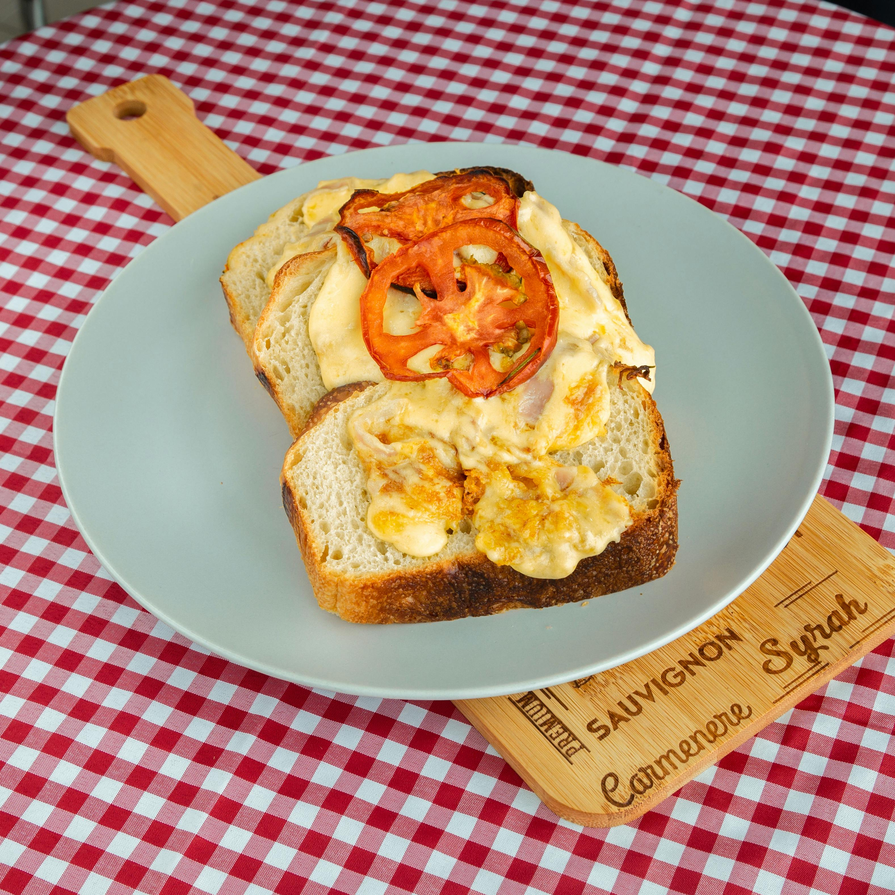

Vegetarian Recipes
Delicious, meat-free meals that are easy on your wallet!
Whether you're a lifelong vegetarian or just looking to eat more plant-based meals, these budget-friendly vegetarian recipes are full of flavor and nourishment.
Hearty Vegetarian Chili

Spinach Breakfast Quesadillas
Vegetable Fried Rice
← Back to Home